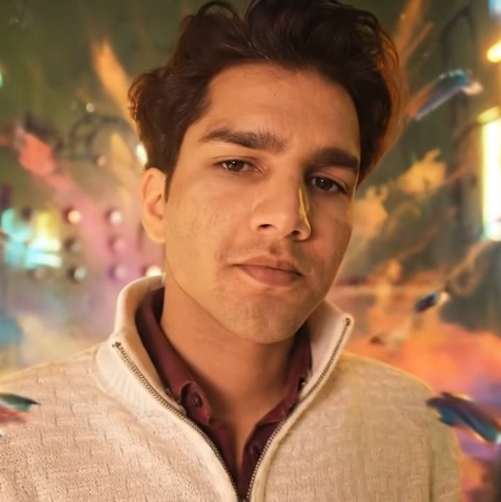

Suraj Kadian
just a curious soul
Hi, I’m Suraj. Since you’ve landed here, you might be wondering who I am — or maybe you just clicked by accident. Either way, you’re here now… so have a look around. And if you feel like saying hi, go ahead. I don’t bite. :)